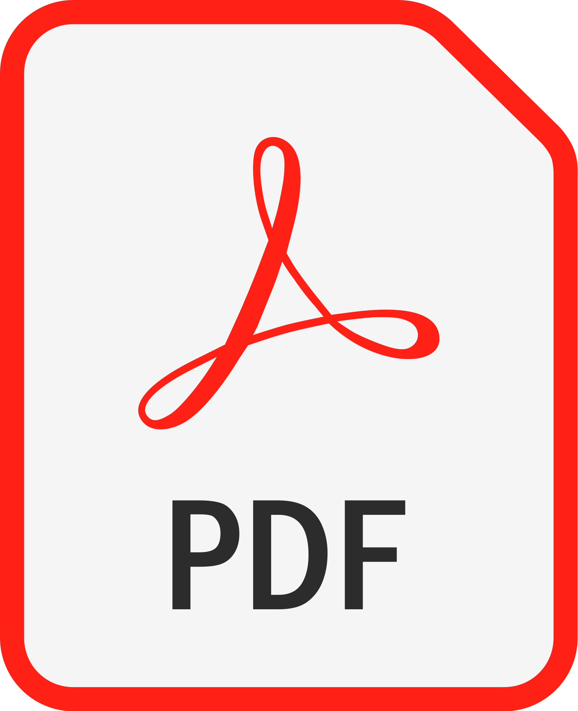

References are available upon request. Unofficial transcripts, as well as certificates, are hyperlinked. If you want my resume, it is available in PDF format.

SUMMARY OF QUALIFICATIONS
Background in programming and engineering. Skilled in code development and review, including creating documentation for software and IT processes. Proficient in translating complex technical information into clear, user-friendly manuals and guides. Excellent organizational and planning abilities, committed to delivering projects on time and within scope. Proven track record of collaborating with project managers, analysts, and subject matter experts to produce high-quality materials that meets regulatory requirements.
LANGUAGES
English (native) | Spanish (fluent) | Portuguese (fluent) | Mandarin (beginner)
TECHNICAL SKILLS
Technical Writing | HTML | Markdown | Microsoft Office Suite | Project Management | Python | C++ | CSS | JavaScript | Posit Cloud / R | Tableau | MATLAB | LabVIEW | SPSS | MiniTab | MySQL | SQLite3 | AutoDesk Inventor
MILITARY SERVICE
US Army 2012-2016
WORK EXPERIENCE
-
Westcliff University 2/2023 - presentADJUNCT PROFESSOR (COLLEGE OF TECHNOLOGY & ENGINEERING)
- Graduate courses: Introduction to Data Analytics, Cloud Data Visualization, and Data in Artificial Intelligence & Machine Learning.
- Undergraduate course in the College of Business: Foundations of Statistics
-
Middle GA State University 5/2023 – 5/2024LECTURER & ADJUNCT PROFESSOR (SCHOOL OF COMPUTING)
- Undergraduate courses: Introduction to Computer Programming, Application Development, Web Development, Human-Computer Interaction, and FinTech.
-
Clayton County School District 10/2022 - 8/2023SOFTWARE DEVELOPMENT TEACHER
- Created state curriculum documents and faculty training materials for the GADOE 9-12 IST (Intro to Software Technology) course, covering Cloud Computing, Computer Science, Game Design, Internet of Things, Programming, Web and Digital Design, and Web Development pathways.
-
iFood 8/2019 - 2/2022DATA VISUALIZATION CONSULTANT (BRASILIA, BRAZIL)
- Collaborated with the cybersecurity team to document the implementation of a temporary Purple Team.
- Presented detailed technical reports and developed documentation solutions for international partners, facilitating clear communication of complex data insights.
- Created and maintained documentation for data visualization tools and processes.
-
NuBank 8/2019 - 2/2022DATA VISUALIZATION CONSULTANT (BRASILIA, BRAZIL)
- Worked closely with market risk analysts to document data analysis processes and create detailed risk dashboards, ensuring accuracy and clarity in the presentation of risk data.
- Developed standardized documentation and training guides to support the use of data visualization tools and techniques within the team.
-
Navicent Health Medical Center 10/2016 - 11/2018
- ROBOTIC SURGERY RESEARCH ANALYST
- Provided prescriptive analytics and developed detailed reports with data collected from reconstructive surgery projects, documenting methodologies and findings until project completion.
- BIOMEDICAL ENGINEERING TECHNICIAN II
- Debugged hospital equipment for ICU, PICU, and NNICU, maintaining detailed service logs and technical documentation.
- Mentored two interns, developing training materials that facilitated their successful transition into permanent positions.
- ROBOTIC SURGERY RESEARCH ANALYST
INTERNSHIPS
- Navicent Health Medical Center | Fall 2016 | BIOMEDICAL ENGINEERING TECHNICIAN INTERN
- Vein Specialists of the South | Summer 2014 | BIOFLUIDS / BIOMECHANICS RESEARCH ANALYST INTERN
- Mercer University | Spring 2014 | NANOPARTICLES RESEARCH ANALYST INTERN
PROJECTS
- Development of a Mobile Ankle Joint Attachment for the Universal Prosthesis | 2016
- Comparing the Mechanical Properties of Cancellous Bone between Pig Femur Bone, Deer Femur Bone, and Human Humerus Bone | 2016
- The Study of Injury Biomechanics in the Wrist/Hand and Ankle/Foot for Tumbling Using the MatScan | 2015
EDUCATION
- MSIT Health Informatics | Middle Georgia State University | 2018 | 4.0
- BSE Biomedical Engineering | Mercer University | 2016 | 3.4
- BA Spanish | Mercer University | 2016 | 3.4
COURSES AND CERTIFICATIONS
- Professional Certification in Data Science | Entity Academy & Woz U | 2023
- Engineering Technology Education I & II | GACE | 2022 | Passed-professional
- Leadership Development and Assessment Course | United States Army | 2016 | Top 15%
AWARDS AND HONOR SOCIETIES
- Distinguished Military Graduate
- Tau Beta Pi (Engineering Honor Society)
- Phi Sigma Iota (Foreign Language Honor Society)
- Alpha Phi Omega (National Service Fraternity)
- HS Valedictorian
- HS STAR Student (SAT)
VOLUNTEERING OPPORTUNITIES
- Fulbright Scholar Program (Summer 2023)
- Head Softball Coach (Spring 2022)
- Missionary (Fall 2019)
- Honduras Outreach, Inc (Summer 2015)
GUEST SPEAKING OPPORTUNITIES
- Rotary Club of Griffin, GA (3/2023, 2/2018, 8/2013, 4/2012)
- Kiwanis Club of Griffin, GA (4/2018)
- GA Board of Education Annual Teacher Luncheon and Workshop (4/2014)
- National Bank Outstanding Student Banquet (3/2013)